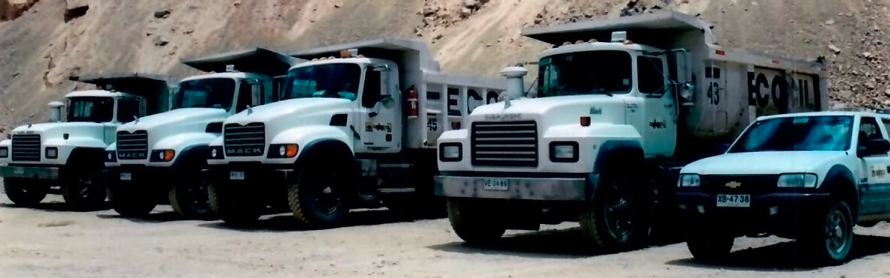

Nuestra historia
Empresa de Construcciones Civiles Ltda. (Ecocil Ltda.), inicia sus operaciones en el año 1964, orientando su desarrollo en dos pilares fundamentales, el primero fue el área de construcción, que abarcó la edificación de casas, edificios, establecimientos educacionales y varias obras de construcción y pavimentación de caminos. El segundo estaba constituido por servicios a la minería como fueron, la explotación de minas de hierro, movimiento de tierras, excavaciones y el arriendo de camiones y equipos. A partir de los años 90, la empresa se ha orientado y especializado en servicios a la minería para lo cual consta de una plataforma de profesionales y técnicos de primer nivel como también de modernos equipos y camiones. Asimismo nuestro objetivo de satisfacer las necesidades de nuestros clientes nos ha demandado certificarnos en las normas de calidad ISO 9001-2000. El año 2008, la empresa modificó su razón social y ha pasado a denominarse: “EMPRESA CONSTRUCTORA ECOCIL S.A.”